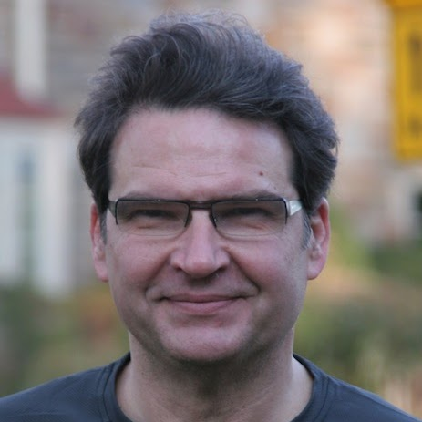
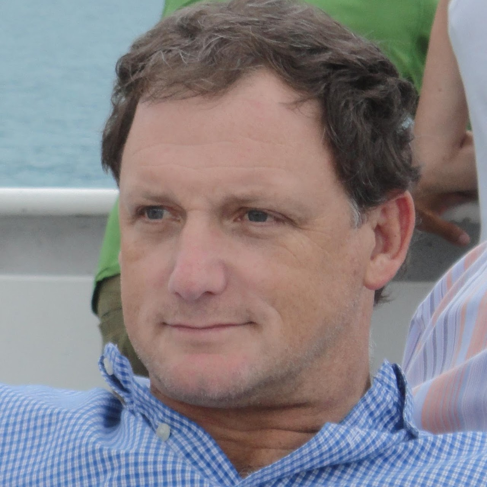
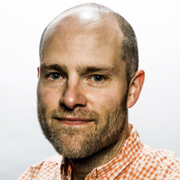

Visual Learning and Reasoning for Robotic Manipulation
Full-day workshop at RSS 2020
Oregon State University at Corvallis, Oregon, USA
July 13, 2020, Pacific Time (PT)
Welcome! Please attend our virtual workshop via this link.
This workshop includes three live events:
This workshop includes three live events:
- Invited Talks (25 min talk + 5 min Q&A)
- Spotlight Talks (4 × 5 min pre-recorded videos + 10 min Q&A)
- Panel Discussion (60 min)
Schedule
| Time (PT) | Invited Speaker | Title |
|---|---|---|
| 9:15 - 9:30 | - | Opening Remarks |
| 9:30 - 10:00 |  Kostas Daniilidis University of Pennsylvania | The Curious Explorer |
| 10:00 - 10:30 |  Thomas Funkhouser Google Research | Spatial Action Maps |
| 10:30 - 11:00 |
Spotlight Talks + Q&A |
Latent Space Roadmap for Visual Action Planning
Martina Lippi (University of Salerno); Petra Poklukar (KTH); Michael Welle (KTH); Anastasiia Varava (KTH); Hang Yin (KTH); Alessandro Marino (University of Cassino and Southern Lazio); Danica Kragic (KTH)
|
| 11:00 - 11:30 | Sonia Chernova Georgia Tech | Semantic Grasping through Wide and Deep Learning |
| 11:30 - 12:00 |  Russ Tedrake MIT / Toyota Research Institute | Toward Category-Level Manipulation |
| 12:00 - 1:30 | - | Lunch Break |
| 1:30 - 2:00 | Pieter Abbeel UC Berkeley | Can Deep Reinforcement Learning from Pixels Be Made as Efficient as from States? |
| 2:00 - 2:30 |
 Fei-Fei Li
Stanford University
Fei-Fei Li
Stanford University
|
Octopus, Kittens & Babies: From Seeing to Doing |
| 2:30 - 3:00 |
Spotlight Talks + Q&A |
Cloth Region Segmentation for Robust Grasp Selection
Thomas Weng (Carnegie Mellon University); Jianing Qian (Carnegie Mellon University); Brian Okorn (Carnegie Mellon University); Luxin Zhang (Carnegie Mellon University); David Held (Carnegie Mellon University)
|
| 3:00 - 3:30 |
Spotlight Talks + Q&A |
Efficient Adaptation for End-to-End Vision-Based Robotic Manipulation
Ryan C Julian (University of Southern California); Benjamin Swanson (Google); Gaurav Sukhatme (University of Southern California); Sergey Levine (Google); Chelsea Finn (Google Brain); Karol Hausman (Google Brain)
|
| 3:30 - 4:00 | Dieter Fox University of Washington / NVIDIA | Manipulating Known and Unknown Objects |
| 4:00 - 5:00 |
 Greg Dudek (Moderator)
McGill University / Samsung
+
Ken Goldberg
UC Berkeley
+
Invited Speakers
Greg Dudek (Moderator)
McGill University / Samsung
+
Ken Goldberg
UC Berkeley
+
Invited Speakers
|
Panel Discussion |